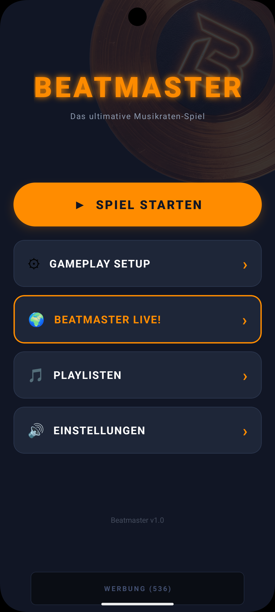
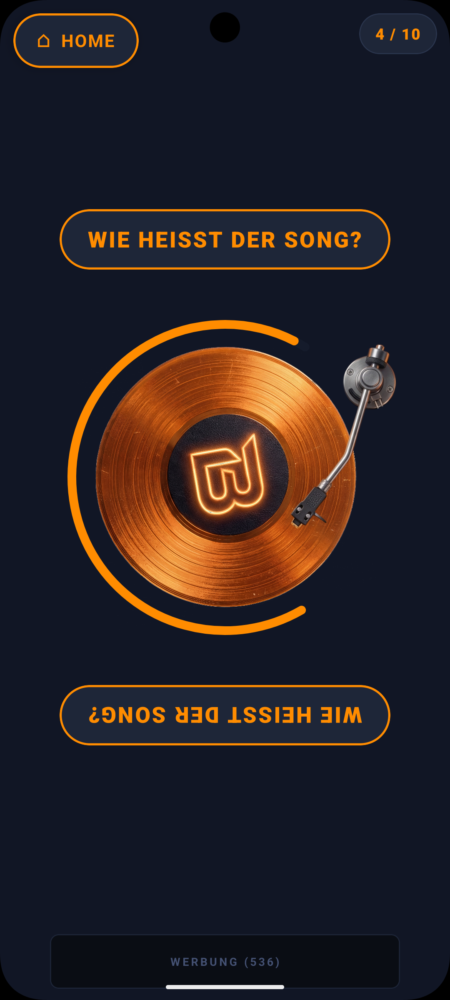

The Arcade Experience
Players are greeted by a modern, highly engaging hub. From here, users can dive into quick setups, continue their active streaks, or unlock new music categories.
Our UI is designed to be sleek and dark, putting absolute focus on vibrant accents and music discoverability from the very first tap.

A World of Genres
BeatMaster categorizes the vast Apple Music database into curated playlists: 80s Rock, 90s Pop, modern Hip-Hop, or even iconic Film Soundtracks.
Players curate their own match by merging multiple playlists. The more playlists they select, the more diverse the ultimate Spotify-like streaming experience during the trivia game.

Live Multiplayer Lobby
Music is a social experience. BeatMaster features a fully synchronized real-time multiplayer system. The host sets up the lobby, and friends scan a QR code to join from their own devices instantly.
This virality means that for every host with the app, multiple new potential users are exposed to the Apple Music integrations via the shared trivia session.

Dynamic Quiz Generation
Once the game begins, BeatMaster securely queries the iTunes Search API and generates dynamic trivia questions on the fly—ensuring thousands of unique combinations.
The app filters through the selected decades and playlists to pick the perfect track and pairs it with one of multiple question types: "Who is the artist?", "What year?", or "What's the title?"

The Audio Core
A virtual vinyl record drops, and the countdown begins. A crystal clear 30-second music preview provided by the Apple Music API plays in the background.
This is where the magic happens. Players aren't just reading trivia; they are actively vibing to the highest quality previews available on the market, reliving nostalgia or discovering completely new favorite artists.

From Guess to Stream
As soon as the timer ends, the resolution screen fades in. The player is presented with the correct answer layered over the beautifully rendered iTunes album cover art.
Direct Apple Music Integration
Right below the high-res cover art sits our primary Call-To-Action. A prominent "Listen on Apple Music" button seamlessly deep-links the user directly into the Apple Music app to listen to the full song, add it to their library, and drive continuous premium subscriptions to Apple's ecosystem.